JOSM for Data Quality
Objectives:
- Understanding how to select and count numbers of objects in certain administration boundary
- Understanding how to count numbers of error and warning in certain administration boundary
- Understanding how to validate administration boundary
One of the expected results in doing mapping activity is to produce a good quality map. The quality including object information completeness and right topology. Using OpenStreetMap as a base map to show the result of field survey could help you to monitor the progress of your mapping activity result by counting objects and information from the field. In this module you will learn how to count your field survey data and administration boundary using Java OpenStreetMap (JOSM)
I. Counting Objects in Certain Administration Boundary
One of the stages of data quality monitoring is by counting the objects in your mapping area. The purpose is to know the progress of the mapping activity such as before and after the mapping started. Moreover, this activity can help you to validate the completeness of information for you mapping objects. You can use JOSM to count your mapping objects on your survey area. There are steps to count objects in certain administration boundary such as village level, as follows:
a. Download OpenStreetMap Data in Mapping Area
Before you start counting your mapping objects, you need to download OpenStreetMap data in your mapping area. When counting the objects, you can use you mapping area administration boundary such as village boundary. In this example, you will count the objects in Pleburan Village. These are the steps that you need to follow to download OpenStreetMap data:
- Open JOSM in your laptop / computer.
- Select File → Download Data menu, you will see a download box around your mapping area in OpenStreetMap.
- Select Areas around Places menu and type village name “Pleburan” in the search box and remember to check OpenStreetMap Data and Download as New Layer option
- If it has finished, please choose the most relevant result with your mapping area. You can look at the city location and has boundary=administrative tag. Your result will be in blue color
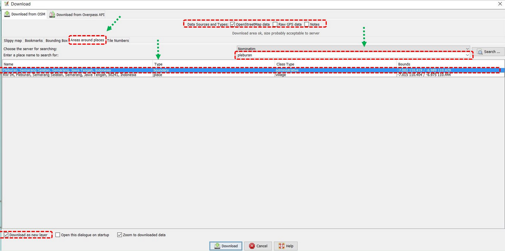
- After set all the options like the picture above, you can click Download.
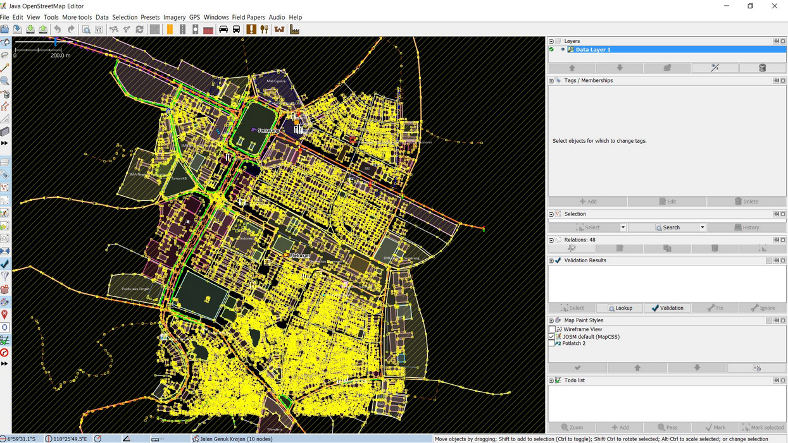
Notes : If your mapping area size is too large, please download it periodically into JOSM
b. Counting Objects in Certain Administration Boundary Area
If you have successfully download data in your mapping area, the next step is counting total of objects in it. The steps to count numbers of objects in your mapping area as follows:
- Click Edit → Search menu to select administration boundary of Pleburan Village.
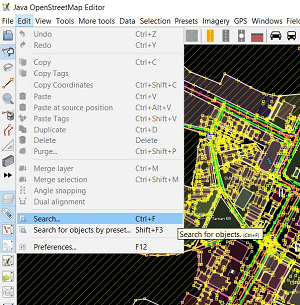
- In search string, please type “admin_level=7” (village level) and click Start Search
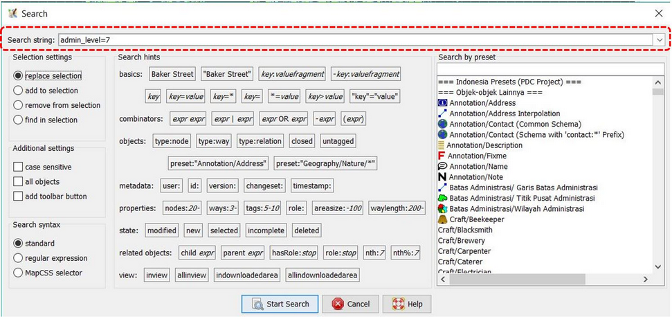
- You will see all objects that have “admin_level=7” tag will selected and listed in selection window. Then you can select Pleburan Level which you can count all object on it by double click it. You will see administration boundary of Pleburan Village will be shown in purple color in JOSM data layer which indicate that the village has been selected.
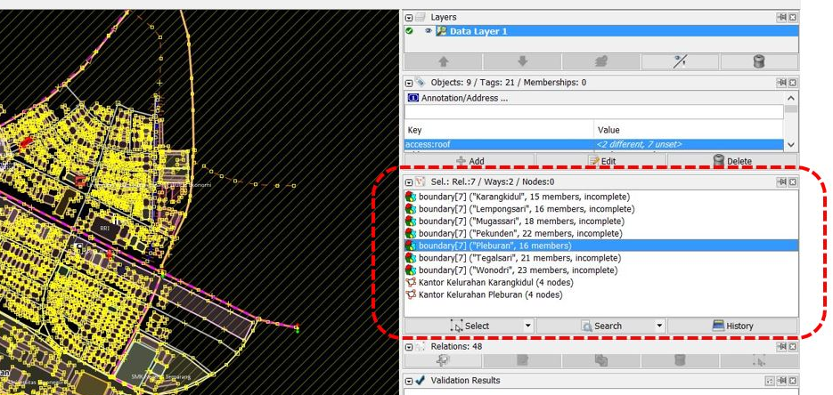
- If your JOSM has not Selection menu, you have to install utilsplugin plugin in your JOSM. The explanation about how to install the plugin can be seen in Adding OSM Data using JOSM module. After that, please select Selection → All inside [testing] menu. You will see all objects inside Pleburan Village will be selected and have red color.
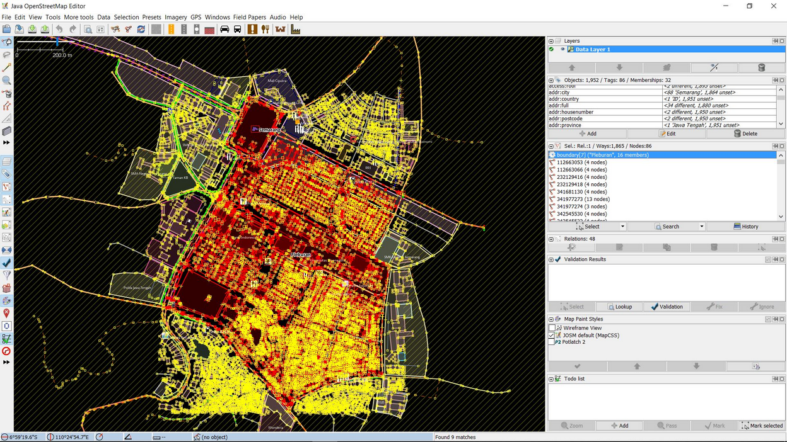
- After that, please select Selection → Intersecting Ways menu to select all objects inside and intersected with Pleburan Village, such as road networks and river. Duration of this process depends on area size and number of objects inside the village.
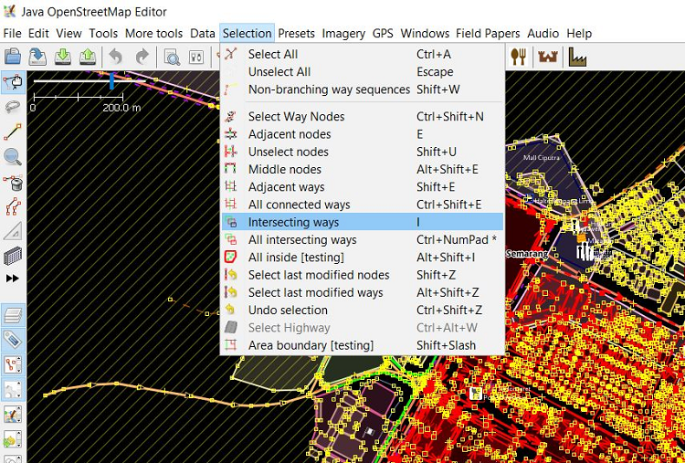
- You can see all the total number of objects in properties/membership window.
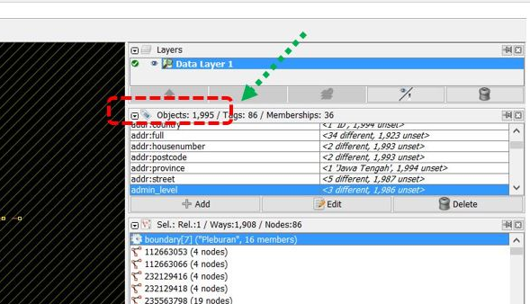
- As you can see in the image above, there are 1995 objects in Pleburan Village have been selected. Please keep in your mind, this result is whole selection result of objects. You do not need to count for each specific object in your mapping area using JOSM.
II. Count Number of Error and Warning in Certain Administration Boundary
After successfully counting the total number of objects in your mapping area ( in this module is Pleburan Village), you should continue to follow the steps to see and count number of Error and Warning on objects in the village:
- Click Validation in your validation window. Wait until JOSM finish to count the number of Error and Warning on your objects.
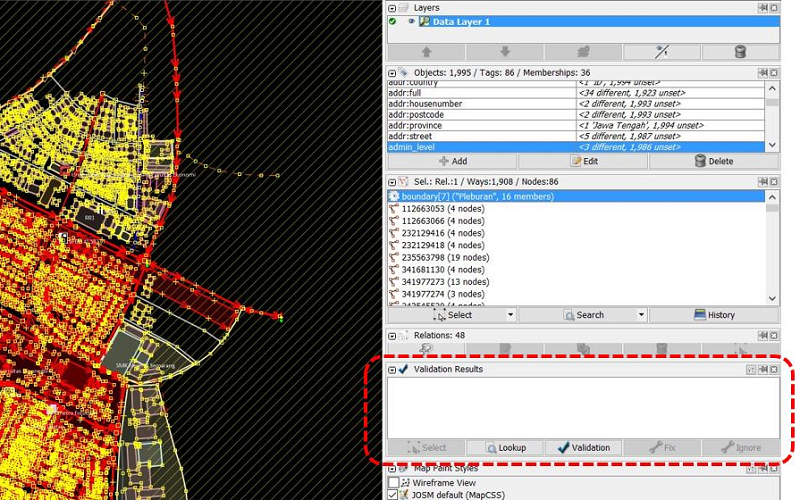
- If your JOSM has finished, you will see the results in the validation window. You better write the number of error and warning then try to fix them all. For further explanation about how to validate and fix error and warning in JOSM can be seen in JOSM for Survey Data Validation.
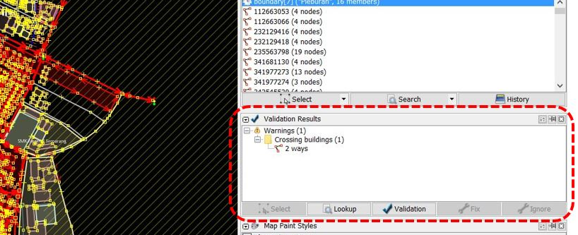
- After you have fixed the error and warning , you can calculate data quality number in Microsoft Excel or Google Sheet. The result will show data quality comparison in the mapping area, before and after the mapping activity has done. Error and Warning types also need to be added into calculation table.
Table of Data Quality Recapitulation
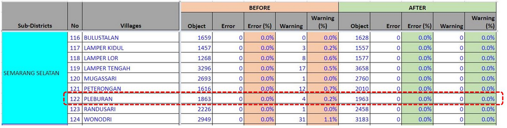
As you can see on the table above, the number of objects in Pleburan Village before the mapping activity was 1.863 where there were 4 warnings. After the mapping activity and validation have done, the number of objects is increasing to 1.963 where there are no error and warning have been found. You can see the whole recapitulation table for Data Quality in Semarang in this link: http://bit.ly/tabeldatasemarang
III. Administration Boundary Validation
After have finished to calculate the number of objects and data quality in your mapping area, you need to calculate and validate the administration boundary of your mapping area. In this calculation, you will validate of administration boundary such as village and sub-village boundary (RW) in your mapping area. You need to check number of sub-village in the mapping area, boundary information (tag) completeness, relations of village and sub village boundary and backup the boundary as an .osm file. We still use Pleburan Village as an example in this validation.
a. Counting Number of Sub-Village (RW)
These are steps that you have to do for counting number of sub-village (RW) in your mapping area:
-
You have downloaded Pleburan Village in your JOSM. However, it also means you download all objects in the village and it could be difficult for you to see and edit the administration boundary because so many objects around it. Therefore, you have to filter the data. If you have not known about filter tools functions in JOSM, please look at Menggunakan Alat Filter di JOSM module
-
Activate your _filter _tool in JOSM by click Windows → Filter
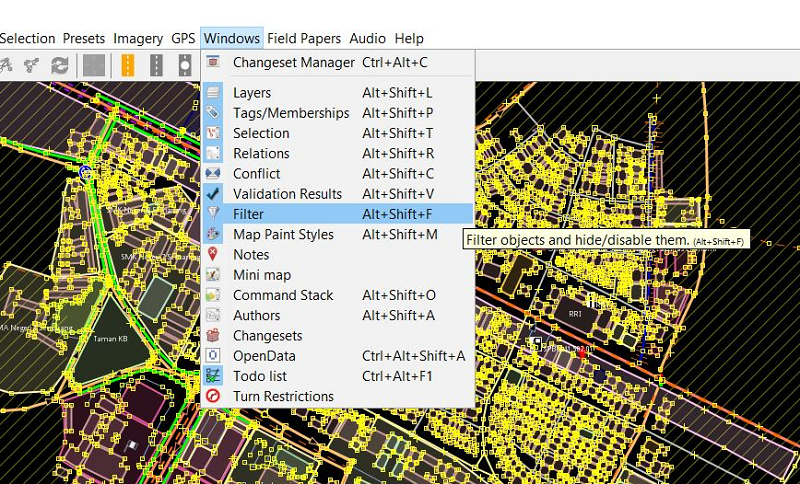
-
Filter window will appear in JOSM. please click add and write query to filter the data show it only shows administration boundary. The query is “is_in:village”=”Pleburan”.
-
You will see your data will change like the picture below:
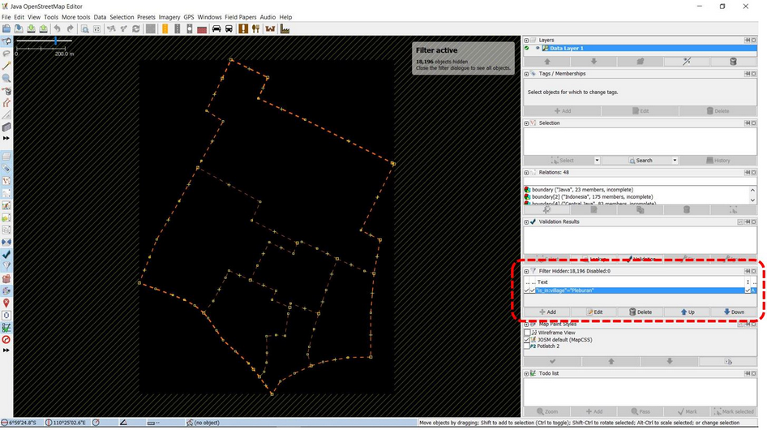
- Select all sub-village boundary in Pleburan Village with search function. Click Edit → Search. You will see a search window and write query “admin_level=9” then click Start Search.
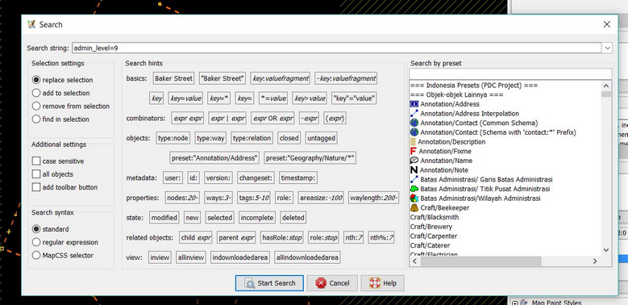
- You will sub-village boundary in your village be selected. It is shown by purple color in the boundaries. In selection window you will see all sub-village list in Pleburan Village.
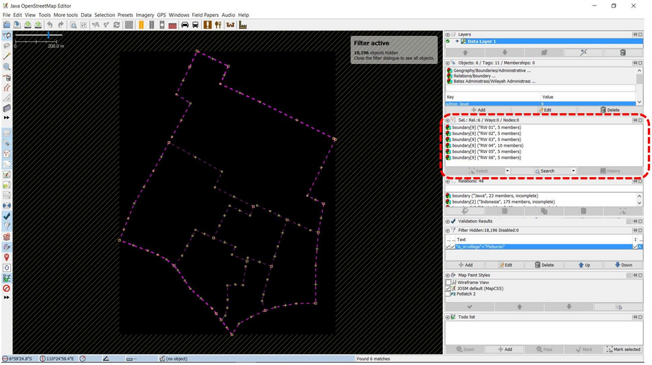
- You can compare number of sub-village (RW) in Pleburan Village which a result of selection function in JOSM in recapitulation table of field survey.
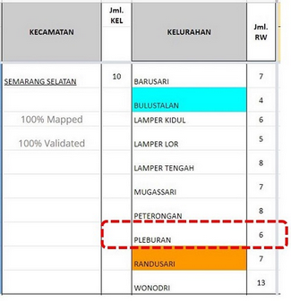
As you can see on the table above, the number of sub-village (RW) in Pleburan Village is 6 sub-villages. This number is same with the selection result in JOSM which also select 6 sub-villages boundaries starting from RW 01 to RW 06. Therefore, there is no error on number of sub-villages in your mapping area. You can continue to validate the tag and relation of boundary administration.
b. Counting Tag Completeness and Boundary Administration Relations
After counting number of sub-villages in Pleburan Village, now you need to validate the boundary administration tag completeness. These are the tags that need to have for each of sub-village (RW) boundary administration:
Table of Boundary Administrative (RW) Tag List
| key | possible values |
|---|---|
| type | boundary |
| boundary | administrative |
| name | (RW name) |
| admin_level | 9 |
| is_in:province | (province name) |
| is_in:city (City) / is_in:town (District) | (city/district name) |
| is_in:municipality | (sub-district name) |
| is_in:village | (village name) |
| flood_prone *only for RW relation | yes, no |
| landslide_prone *only for RW relation | yes, no |
| source | HOT_InAWARESurvey_2018 (Based on the mapping project name) |
To validate tag of sub-village administration boundary, please follow these steps:
- Choose all sub-villages in selection list result from search feature in JOSM.
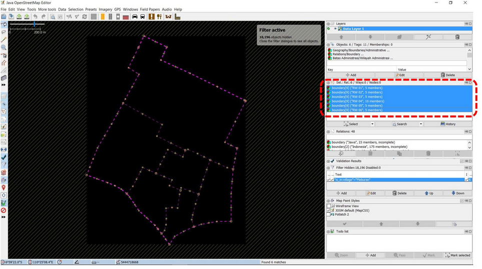
- Right click on sub-villages list and choose Edit. You will see a warning window that remind you where all information related the sub-village in Pleburan Village will be open in 6 windows. Clik Ok.
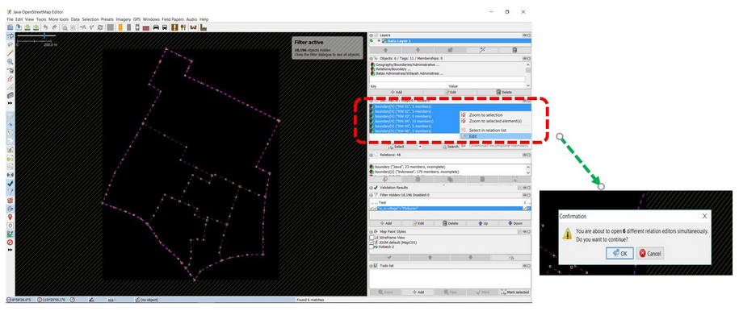
- After the window is open, you need to check the tag completeness for each sub-villages. Moreover, the boundary relation checking needs to be done by see the relation connection in member . You can see whether your relation is a good relation if connection between sub-village member all connected and creating loop or circle. If you want to know more details about connection between relation and how to add it, please see Membuat Batas Administrasi di JOSM module.
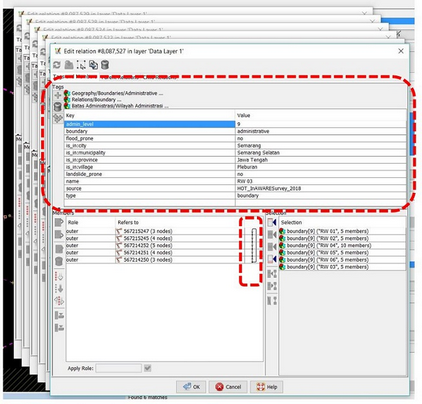
You can add another tag if there are some tag still not added in the sub-village based on tag list above. You also can fix the relation and member order and rules for each member.
Note : If the number of sub-village does not same with the field survey (more or less), you need to discuss this problem with the Data Entry and Quality Assurance who survey and input all the boundary into OpenStreetMap. Do same validation steps for relation for sub-district (“admin_level=6”) and village (“admin_level=7”) administration boundary.
c. Administration Boundary Backup
After doing recapitulation and validation for administrative boundary, you need to backup the administrative boundary. Thus, you will have a backup for your administration boundary when something unexpected events happen such as the boundary accidentally deleted or some users edit it wrong. To do so, the steps as follows:
- Click Edit → Copy
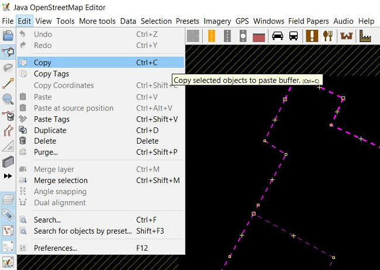
- Choose File → New Layer You will see new layer in JOSM.
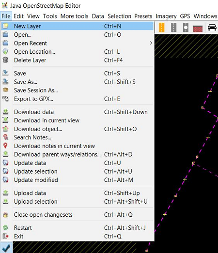
- Click Edit → Paste at source position
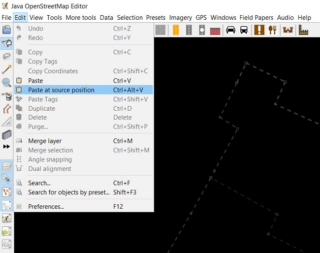
- You now have a new layer that only show administration boundary of your mapping area. Please click File → Save and save it into .osm file format and give name based on your mapping area.
SUMMARY
You have learned about how to recapitulate data quality in JOSM. This activity is one of the validation activities for field survey data that has been added into OpenStreetMap by Quality Assurance. By doing this, your data quality will be assured and have better quality. These are details about what objectives that have learned in this module:
- Count number of objects in certain administration boundary (village)
- Count number of error and warning in certain administration boundary
- Doing Recapitulation to compare number of objects and error/ warning
- Validate administrative boundary including count number of sub-village in certain village, checking tag completeness and relation between administration boundary.
- Backup the administration boundary into .osm file format